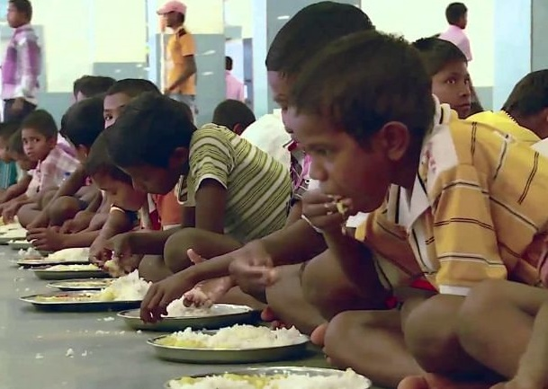

A country cannot progress if most of its people are hungry. Today, 14% of our population
is undernourished and needs our undivided attention. The only way to ensure a
healthy and happy country is by nourishing the ones who need it the most.
Our Recipe Generator
Discover Delicious Creations with Our Recipe Generator
With our Recipe Generator, you have the power to discover a wide array of mouthwatering
recipes tailored to your available ingredients.
Whether you're craving a comforting bowl of soup, planning a festive
feast for family, or seeking quick and nutritious weekday meals, our generator
has you covered.
Join the Movement
Ready to embark on a culinary adventure with our Recipe Generator?
Whether you're passionate about sustainable living, curious about new
cooking techniques, or simply looking to make the most of your
ingredients, our tool is here to guide you every step of the way.
Join us in creating delicious meals, minimizing waste, and making a
positive impact on our world, one recipe at a time.
Take our quick and simple survey to know how well you manage food waste.
OUR CAMPAIGNS
Anganwadi Feeding

Under this programme, Food For All Foundation serves cooked meals to pregnant women,
lactating mothers and children in Anganwadi centres (AWCs). This programme runs as a logical
parallel to serving mid-day meals in schools as part of PM POSHAN Abhiyaan, with the crucial
goal of eliminating malnutrition in children.
Homeless Mothers
The Food For All Foundation has started serving meals to homeless mothers.
Currently, the NGO is feeding them in Vrindavan to ensure that they can live a life
of dignity and respect. Cooked meals are provided to a thousand of them to ensure
that women who live alone, are not devoid of healthy meals.
POSHAN Programme
Food For All Foundation serves mid-day meals to school children in government and
government-aided schools of India.
Children have come back to school after 1.5 years of being away from school.
This year, children from challenging socio-economic backgrounds have spent 6 months studying
at home (with or without healthy food), but, they yet have 4 more months to gain the best
of the knowledge and become healthier each day.
Our ChatBot - WasteWizard
Got questions? Don't worry we are here
WasteWizard is your virtual assistant dedicated to helping you tackle food waste management
and promote sustainable practices. With its wealth of knowledge and helpful tips,
WasteWizard aims to guide you in minimizing food waste, maximizing resource efficiency, and
making environmentally conscious choices. Whether you're looking for guidelines on donating
food,or advice on debunking expiration date
misconceptions, WasteWizard is here to provide informative and practical assistance.
Stay Informed!
Register for Updates on Food Waste and Sustainability
Are you passionate about reducing food waste and promoting sustainability? Join our
community and stay informed about the latest news, tips, and initiatives by registering
on our website! By signing up, you'll receive regular updates and valuable information
directly to your email inbox, empowering you to make a positive impact on the environment
and your community.
WHY REGISTER?
Be the first to know about upcoming events, campaigns, and initiatives focused on
food waste reduction and sustainability.Also gain access to exclusive articles, guides, and
resources tailored to help you lead a more sustainable lifestyle.
Hello Green Wizards! Want To Help Us?
Have A Look At Our Event Calendar
Explore our vibrant event calendar and embark on a journey to support
sustainable living and community well-being. At Food For All, we
believe in the power of food to bring people together, foster creativity,
and drive positive change.
From food drives to cooking workshops, we offer a diverse range of events
designed to inspire, educate, and empower.
Connect, Learn, and Grow
Experience the joy of giving back while connecting with like-minded
individuals who share your passion for making a difference. Together,
we can create a healthier, more sustainable future for all.
Mark Your Calendar and Get Involved Today!
Browse our event calendar, mark your favorite dates, and join us in
making a positive impact in our community. Together, let's celebrate
the power of food to nourish bodies, minds, and souls.
Impact Story
Prevent Food Waste By Leftover Food Donation
A study by Food Ministry, Government of India found that about 20% of food at social events
such as weddings goes waste. Food waste also occurs at parties, functions and restaurants.
This is a sad state of affairs when one considers that two lakh street children in Delhi
go to sleep hungry every day. Therefore, leftover food donation is the need of the hour to
counter both malnutrition and food waste!
Spreading Hope, One Meal at a Time
But the impact didn't end within the restaurant's walls. Through
strategic partnerships with local shelters, soup kitchens, and
charitable organizations, the surplus food found its way into the hands
of those in need. Every meal rescued from waste became a beacon of
hope for the hungry, a reminder that kindness knows no bounds.
Join the Movement
As we reflect on this impactful story, let it serve as a reminder
that each of us has the power to make a difference, no matter how small
our actions may seem. Together, let's continue to turn waste into
wonder, spreading compassion and creating a brighter future for all.